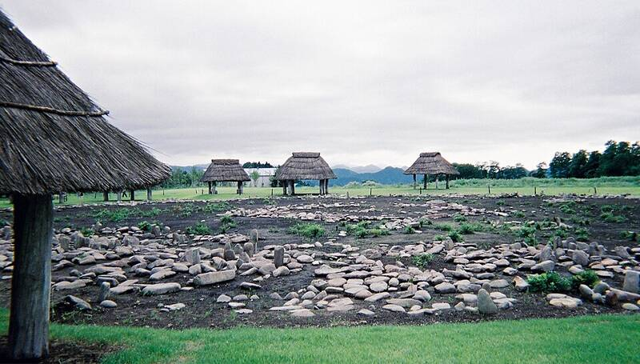

Ōyu Stone Circles
Kazuno, Akita, Japan

Two large stone circles of the late Jōmon period, about 2000 to 1500 BC, built on an artificially flattened plateau. The larger Manza circle, 46 metres across, is the largest stone circle found in Japan. Each is made of rounded river stones brought from a river about 7 kilometres away. Mount Kuromanta, called Japan's oldest pyramid, stands about 2 km to the northeast. 1
Open in the interactive Watcher
Sources
- Ōyu Stone Circles Wikipedia